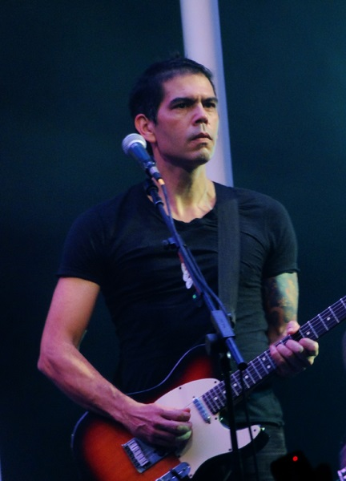
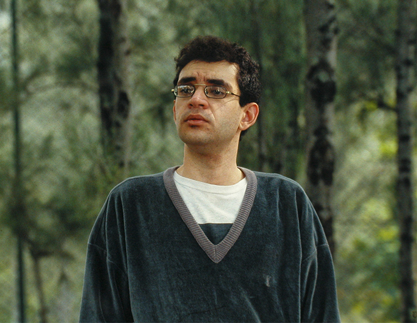
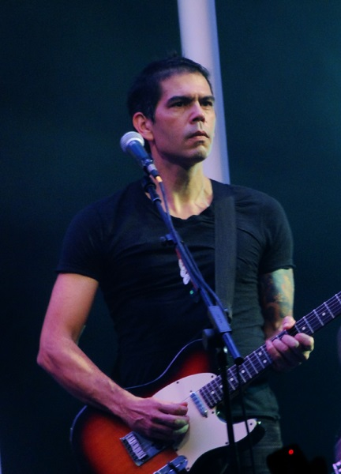
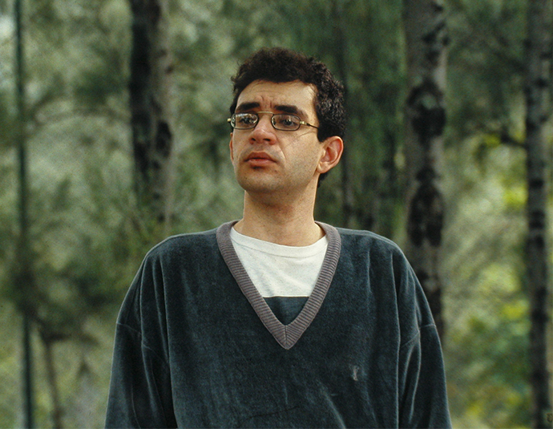

A Legião Urbana surgiu em 1982 quando Renato Russo juntou-se a Marcelo Bonfá, Eduardo Paraná (Hoje, Kadu Lambach) e Paulo Guimarães (o ‘Paulista’). Ico-Ouro Preto teve passagem pela banda, participando de alguns shows e compondo junto a canção “Ainda é Cedo”, mas logo sai da banda. Em 1983, Paulista e Paraná saem e Dado Villa-Lobos assume a guitarra.
Herbert Viana e Bi Ribeiro, este último ex-aluno de inglês de Renato em Brasília, integravam a banda Paralamas do Sucesso (que já estava no elenco da EMI-Odeon) e indicaram àquela gravadora a fita demo da nova banda de Brasília.
Depois de a gravação chegar às mãos de executivos da EMI-Odeon, a Legião Urbana foi contratada e lançou seu primeiro álbum, em 1985, emplacando em junho daquele ano as canções “Será”, “Ainda é Cedo” e “Geração Coca-Cola”. A Revista Bizz, leitura obrigatória para os amantes da música daquela época, elegia a Legião como a melhor banda e Renato, o melhor cantor daquele ano.
Renato Russo e a Legião Urbana participaram ativamente de toda a efervescência do rock brasileiro nos anos 80/90, atingindo no alvo os anseios de jovens brasileiros, fossem eles politizados ou não. Tudo o que a Legião dizia fazia sentido imediato.